{kind=link}
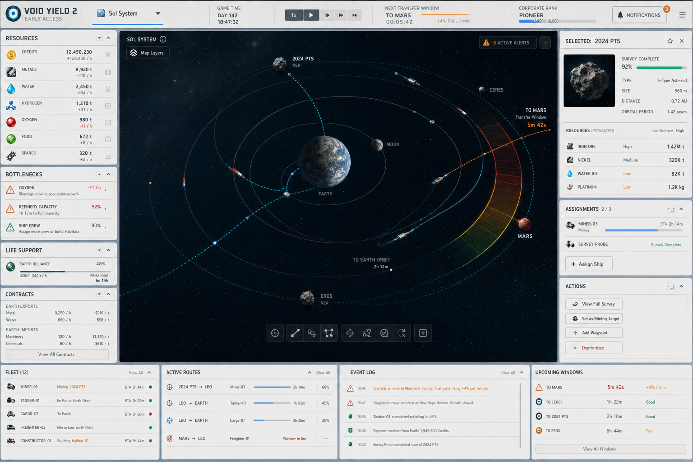
01 Desktop Command Mixed
Dark orbital core with lighter NASA-industrial side panels.
Void Yield 2
Stage 0 Vision Mocks
These are disposable concept screenshots for exploring the look and feel before architecture and gameplay implementation. The goal is to compare palettes, information density, mobile layout, and how much animated 3D belongs beside the management UI.
UI concepts
visual modes
live orbit demo
Interactive Direction
A lightweight Three.js-style sketch of the core fantasy: bodies move, routes breathe, and ships trace transfer arcs while the player reads the operational state from the side panels.
Screenshot Concepts
Use these to decide what feels exciting, readable, and manageable before building the first UI prototype.

Dark orbital core with lighter NASA-industrial side panels.
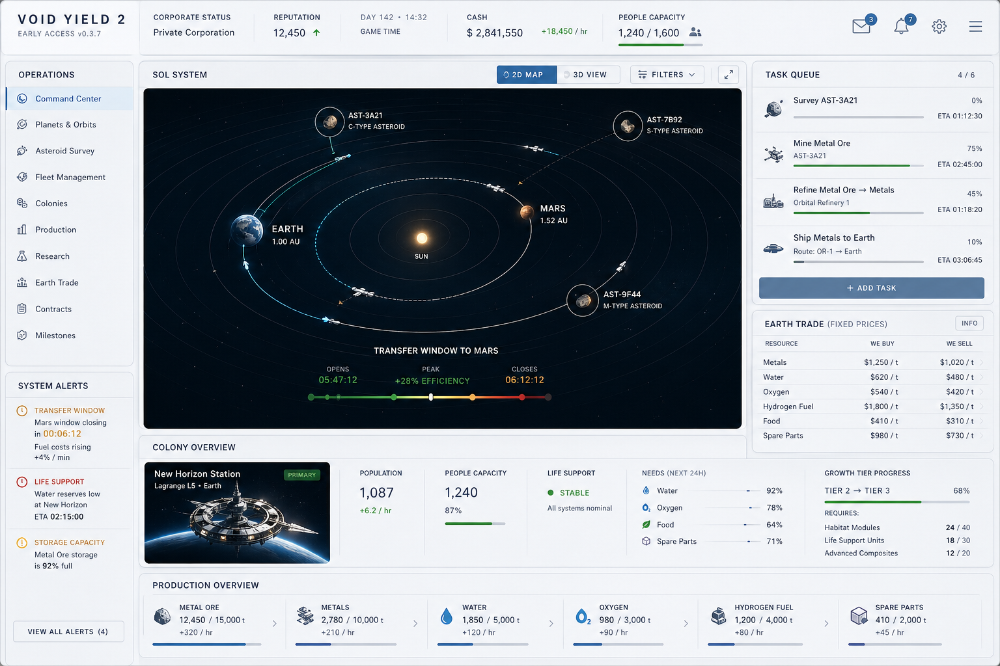
Cleaner light dashboard with a dark embedded system map.
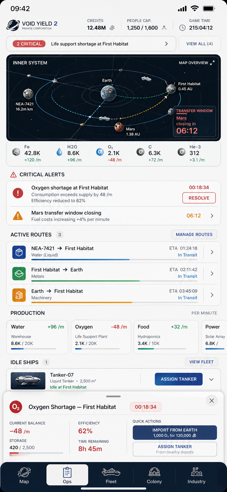
Task-first mobile management, not a compressed desktop UI.
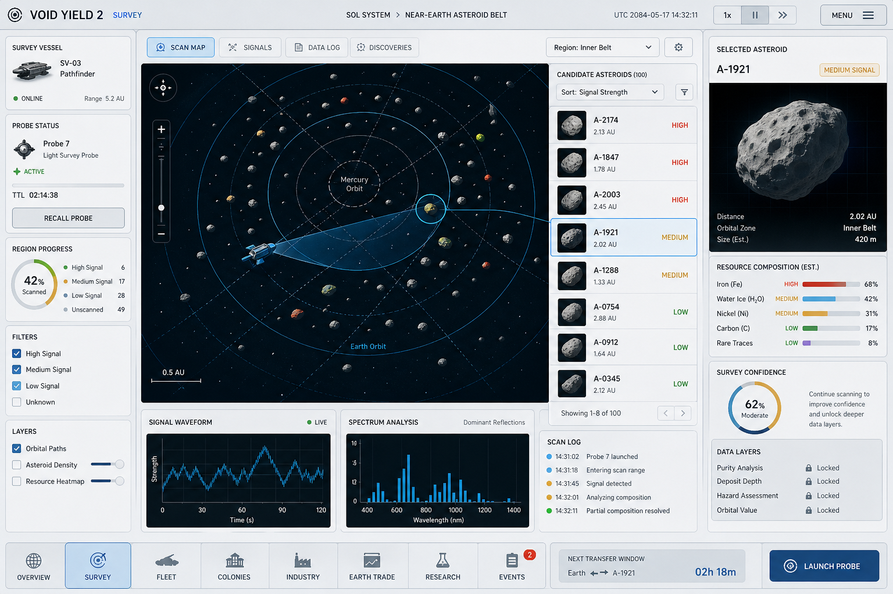
Probe signal, map search, confidence, and resource readings.
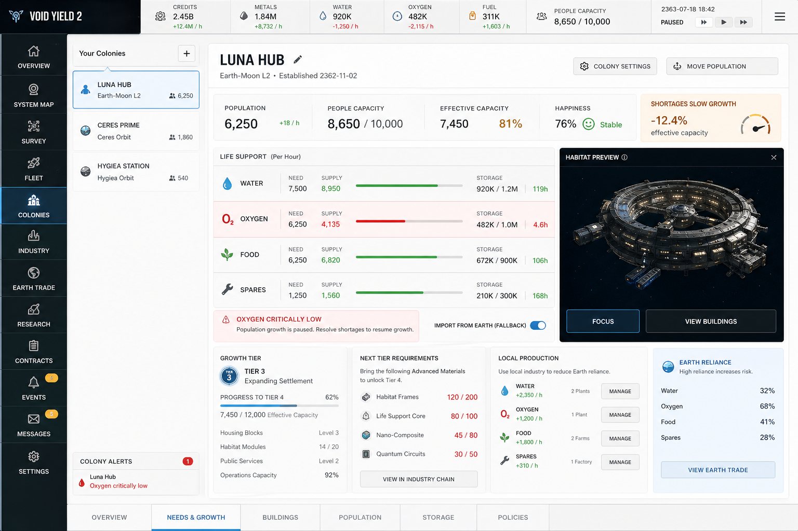
Population, People Capacity, life support, and tier materials.
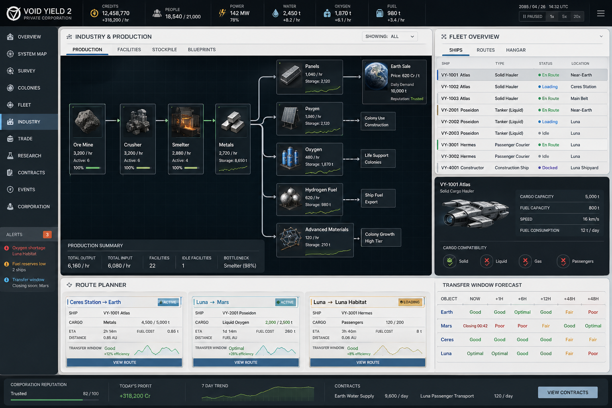
Production chains beside fleet and transfer-window planning.
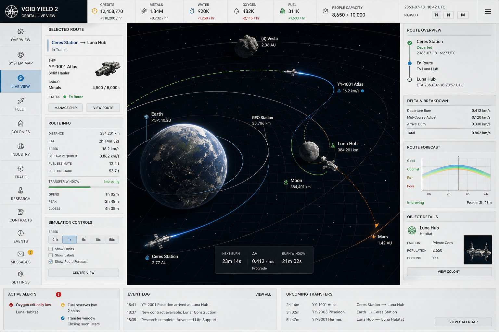
Full 3D system view with transfer arcs and delta-v readouts.
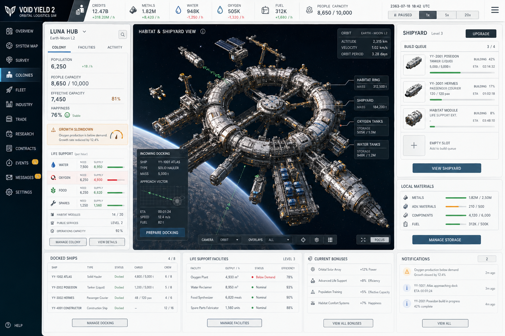
Habitat growth, shipyard queues, materials, and docking vectors.
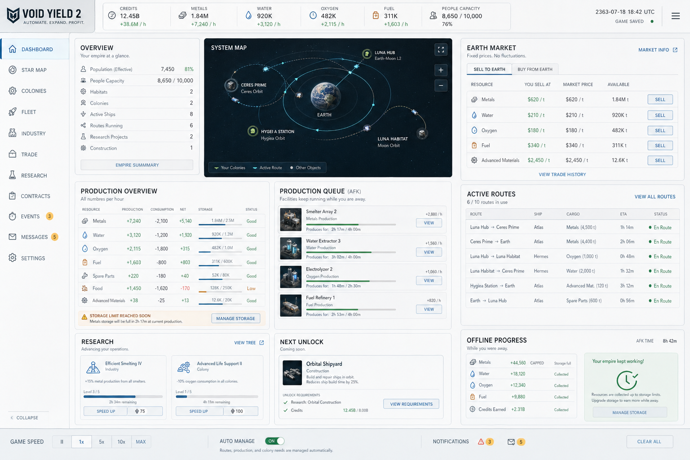
Optimistic light palette for AFK production and milestones.
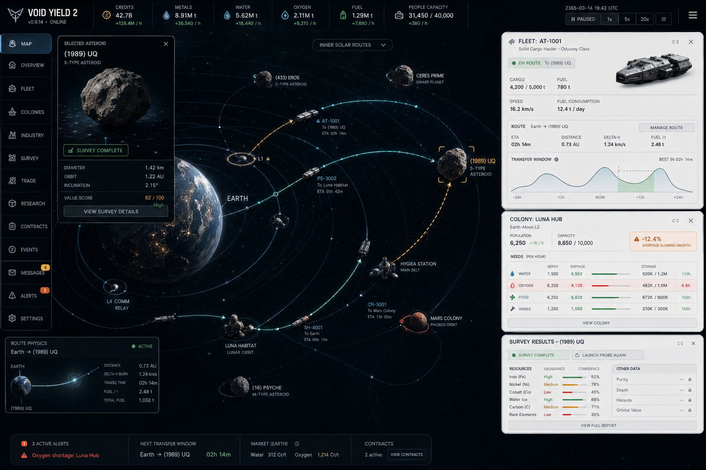
Immersive map with slide-out management surfaces.
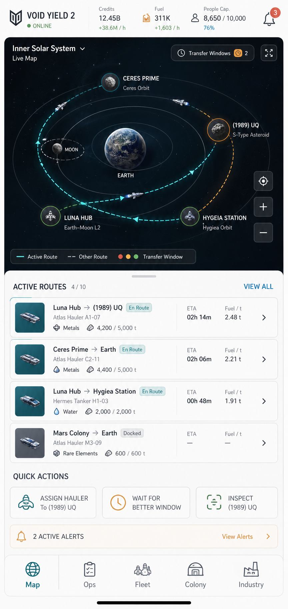
Touch-first orbital map with route cards and quick logistics actions.
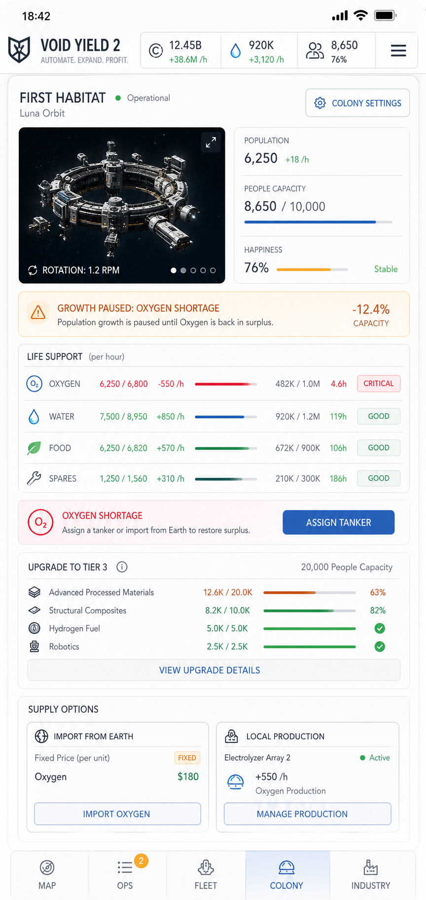
Vertical habitat management with life support and tier requirements.
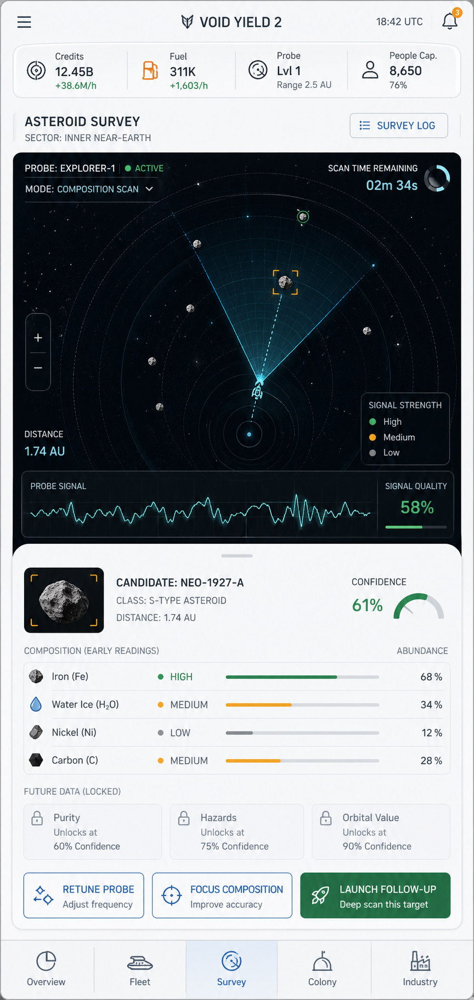
Probe tuning, candidate readings, and unlockable scan layers.
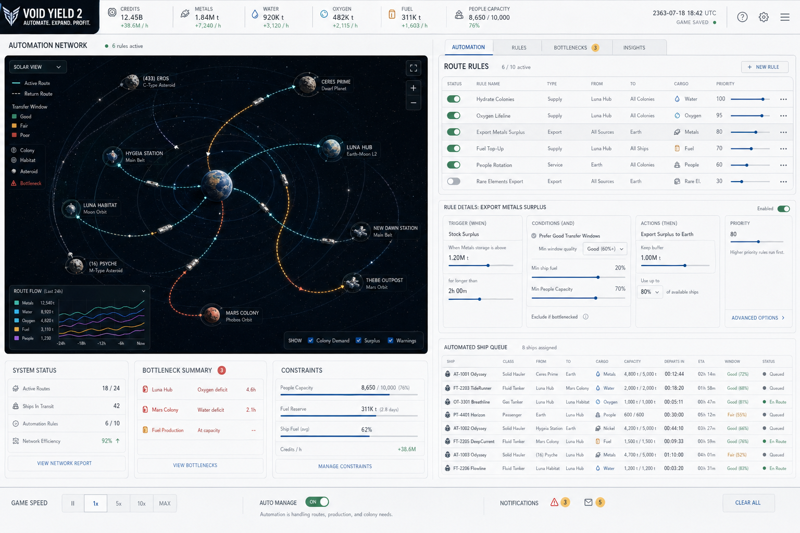
Route rules, stock thresholds, priorities, and transfer timing.
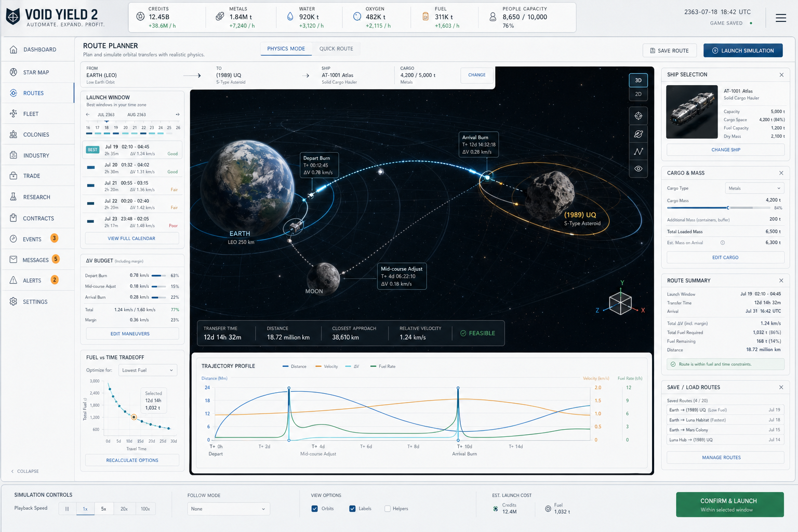
3D transfer planning with fuel, cargo mass, and arrival timing.
{kind=link}
{kind=link}
{kind=link}
{kind=link}
{kind=link}
{kind=link}
{kind=link}
{kind=link}
{kind=link}
{kind=link}
{kind=link}
{kind=link}
{kind=link}
{kind=link}